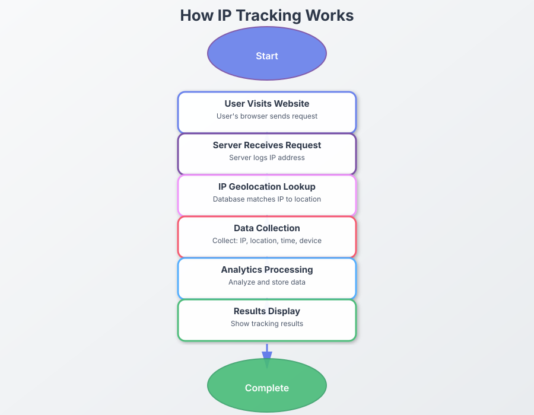

Table of Contents
- Introduction: Beyond Single Touchpoint Data Analytics
- Customer Journey Mapping Fundamentals
- Integrating IP Tracking into Customer Journeys
- Cross-Device Journey Tracking
- Optimizing Conversion Paths
- IP-Based Journey Personalization
- Implementation Guide
- Privacy Considerations
- Real-World Applications
IP Tracking Process Flow

Interactive Flow Diagram
Introduction: Beyond Single Touchpoint Analytics
Traditional website Data Analytics provide snapshots of user interactions, but they often fail to connect these interactions into a coherent story. Understanding the complete customer journey—from init...
IP tracking offers a powerful foundation for customer journey mapping by providing continuity across different interactions. helping businesses understand not just what customers do. but the sequence and context of their actions.
"The most successful businesses don't optimize individual touchpoints; they optimize the entire customer journey. "
This guide explores how IP tracking can transform isolated customer interactions into comprehensive journey maps. revealing insights that drive better experiences. higher conversions. and increased customer lifetime value.
Customer Journey Mapping Fundamentals
Before diving into IP tracking applications, it's essential to understand what constitutes a customer journey map:
Journey Map Components
- Stages: The phases customers move through (awareness, consideration, decision, etc.)
- Touchpoints: Specific interactions with your brand (website visits, email opens, ad clicks)
- Channels: The platforms where interactions occur (social media, website, email)
- Emotions: Customer sentiments at each touchpoint
- Pain Points: Obstacles or friction in the customer experience
- Opportunities: Potential improvements to enhance the journey
Simplified Customer Journey Map
Awareness
Social ads, search
Consideration
Website, reviews
Purchase
Checkout process
Retention
Support, re-purchase
Advocacy
Referrals, reviews
Traditional Challenges in Journey Mapping
Customer journey mapping typically faces several challenges:
- Fragmented data across platforms and devices
- Anonymous users who aren't logged in
- Limited visibility across third-party platforms
- Cookie blocking and privacy measures
- Difficulty connecting online and offline interactions
This is where IP tracking can bridge critical gaps in customer journey visibility.
Integrating IP Tracking into Customer Journeys
IP tracking provides a consistent identifier that can help connect disparate interactions into a cohesive journey:
Creating Journey Continuity
IP data can help establish continuity in several ways:
- Connecting multiple website visits even when cookies are cleared
- Identifying returning visitors across long time spans
- Associating anonymous visits with eventual conversions
- Connecting interactions across your digital properties
Implementation Example:
An e-commerce company implemented URL tracking across their marketing campaigns. By analyzing IP-based journey data, they discovered that 68% of customers viewed their product at least three times before purchasing, with an average consideration period of 12 days. This insight led to a new remarketing strategy that increased conversion rates by 23%.
Building Comprehensive Journey Profiles
By analyzing patterns in IP-based interactions, businesses can:
- Identify typical journey paths for different customer segments
- Determine the most influential touchpoints for conversion
- Recognize abandoned journeys and potential recovery points
- Map seasonal or time-based variations in customer behavior
Organizational vs. Individual Insights
IP tracking is particularly valuable for B2B businesses:
- Identify when multiple stakeholders from the same organization are researching your product
- Track organizational buying journey across different decision-makers
- Recognize when prospects return to key pages after internal discussions
- Identify potential buying committees through organizational IP patterns
Cross-Device Journey Tracking
Modern customer journeys frequently span multiple devices, creating significant Data Analytics challenges.
The Multi-Device Reality
Consider these common multi-device scenarios that IP tracking can help connect:
- Initial research on mobile, purchase on desktop
- Work research on office computer, personal purchase on home device
- Email opens on mobile, link clickthroughs on desktop
- Social media discovery on tablet, website visit on laptop
Network-Based Connection Points
IP tracking can help establish connections when:
- Multiple devices share the same network (home, office)
- Same device connects through different networks (home WiFi vs. mobile data)
- Corporate VPNs mask individual device identities
Implementation Example:
A SaaS provider implemented email tracking along with website tracking to discover that while 70% of their prospects opened product emails on mobile devices, 85% completed free trial signups on desktop computers. This insight led them to optimize their mobile email experience to better bridge to desktop actions, increasing conversion rates by 34%.
Supplementing with Other Identifiers
For maximum journey visibility, combine IP tracking with:
- User accounts and login information
- Browser fingerprinting technologies
- UTM parameters and campaign tracking
- Customer relationship management (CRM) data
Optimizing Conversion Paths
IP-based journey mapping provides invaluable insights for conversion rate 优化:
Identifying Drop-off Points
Analyze where potential customers abandon their journey:
- Pages with high exit rates during key journey stages
- Specific steps in multi-page processes where users disengage
- Time delays between critical interactions that indicate friction
- Geographic or network-related patterns in journey abandonment
Recognizing High-Value Journey Patterns
Identify the patterns that lead to conversion:
- Most common touchpoint sequences for converted customers
- Content consumption patterns that correlate with purchase
- Optimal time intervals between touchpoints
- Engagement threshold indicators that predict conversion
Implementation Example:
A B2B technology company analyzed IP-tracked journey data and discovered that prospects who viewed their pricing page. then returned to technical documentation before contacting sales had a ...
Journey Attribution Models
Use IP-based journey data to improve 归因:
- Develop multi-touch 归因 models based on actual paths
- Compare first-click, last-click, and position-based 归因
- Identify assistive touchpoints that facilitate conversion
- Evaluate channel effectiveness within the context of the full journey
IP-Based Journey Personalization
Beyond analysis, IP tracking enables real-time journey personalization:
Journey-Stage Adaptive Content
Tailor experiences based on journey position:
- Adjust website content to match the visitor's journey stage
- Highlight relevant information for first-time vs. returning visitors
- Modify calls-to-action based on previous interactions
- Simplify paths for users who have shown conversion intent
Return Visitor Enhancement
Optimize the experience for returning prospects:
- Remember previously viewed products or content
- Highlight new features or updates since last visit
- Provide easy access to previously abandoned processes
- Skip redundant steps for recognized visitors
Personalization Opportunities by Journey Stage
| Stage | Personalization Tactic |
|---|---|
| Awareness | Geo-specific content, industry-relevant examples |
| Consideration | Previously viewed items, comparison tools |
| Decision | Targeted offers, simplified checkout |
| Retention | Usage recommendations, renewal reminders |
| Advocacy | Referral incentives, case study opportunities |
B2B Account-Based Personalization
For B2B companies, IP-based organizational identification enables:
- Industry-specific messaging for identified company types
- Customized case studies relevant to the visitor's sector
- Tailored product recommendations based on company size
- Specialized content for detected buying committees
Implementation Guide
Implementing IP-based journey mapping requires a strategic approach:
Technical Setup
Core implementation components include:
- URL tracking for monitoring paths through your digital properties
- Email tracking pixels for connecting outbound communications
- PDF and document tracking for content engagement
- Cross-domain tracking for multi-site journeys
Implementation Options:
- URL Tracking : Use our URL tracker to create trackable links across campaigns
- Email Tracking : Implement email pixels in your marketing communications
- Document Tracking : Track engagement with downloadable resources
Data Collection Framework
Design your data collection strategy to capture:
- Session data (page views, referrers, time on page)
- Interaction events (clicks, form submissions, video views)
- Temporal data (time between visits, total journey duration)
- Contextual information (device type, browser, screen size)
- Conversion events (purchases, signups, downloads)
Journey Analysis Framework
Develop analysis capabilities for:
- Path analysis to identify common sequences
- Funnel visualization to detect drop-off points
- Cohort analysis to compare journey variations
- Segment comparison to identify behavioral differences
- A/B test evaluation to measure journey improvements
Implementation Example:
A financial services company implemented a comprehensive IP-based journey tracking system integrating website Data Analytics, email tracking, and CRM data. By analyzing the resulting journey maps. th...
Privacy Considerations
Implementing IP-based journey mapping must balance insights with privacy best practices:
Regulatory Compliance
- Ensure compliance with GDPR requirements for European visitors
- Adhere to 加州消费者隐私法 guidelines for California residents
- Follow emerging privacy regulations in all applicable jurisdictions
- Implement appropriate consent mechanisms where required
Data Minimization
- Anonymize or pseudonymize IP data when possible
- Establish reasonable data retention periods
- Implement proper data security measures
Transparency
- Clearly disclose tracking practices in your privacy policy
- Explain the benefits of journey mapping to users
- Provide options for users to control data collection when feasible
- Consider a preference center for personalization options
Privacy-First Implementation Tip
Consider implementing privacy-first tracking methods that focus on journey patterns rather than individual identification. This approach can provide valuable journey insights while minimizing privacy concerns.
Real-World Applications
E-commerce: The Multi-Visit Purchase Journey
An online retailer implemented IP-based journey tracking and discovered that high-value purchases typically involved 5-7 site visits over a 3-week period. with product comparison pages being ...
B2B Technology: The Committee Decision Process
A SaaS provider used IP tracking to identify organizational patterns in their buying process. They discovered that technical evaluation. pricing review. and security assessment typically ha...
Healthcare: Patient Education Journey
A healthcare provider tracked the patient education journey using IP-based Data Analytics and found that individuals researching specific procedures typically visited educational content three times bef...
Conclusion
IP-based customer journey mapping represents a significant advancement over traditional single-point Data Analytics. By connecting touchpoints across time, devices, and channels, businesses gain a holistic understanding of how customers interact with their brand.
This comprehensive journey visibility enables not just reactive 优化. but proactive experience design—creating seamless. personalized customer experiences that guide prospects naturally toward conversion and build lasting relationships.
As digital privacy continues to evolve. IP tracking provides a valuable foundation for journey Data Analytics that can be combined with other identity solutions to create a complete picture of the cust...
Ready to map your customer journeys? Start using our IP tracking tools today to gain insights that connect the dots in your customer experience.